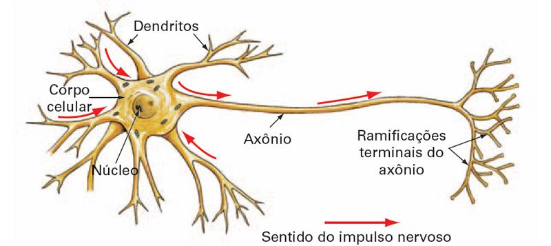
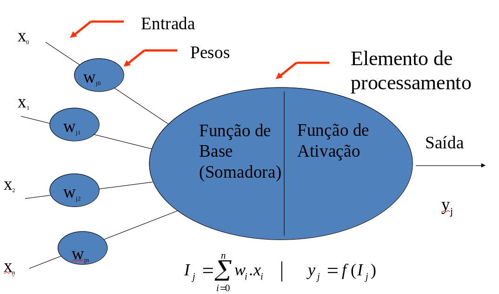
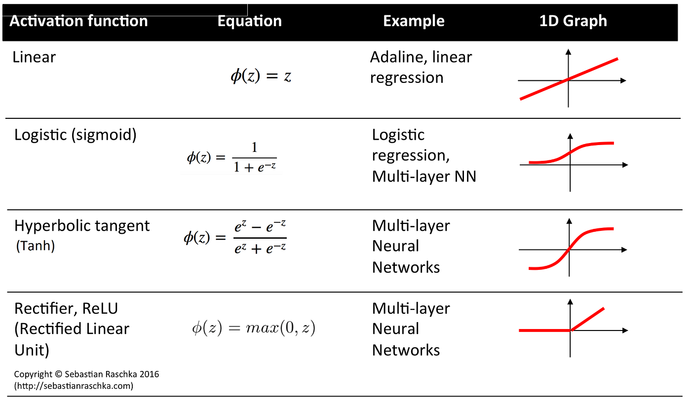

O que são Redes Neurais?
Redes Neurais são modelos inspirados no funcionamento do cérebro humano e do sistema nervoso. Algumas características incluem:
- Alto grau de paralelização no processamento da informação.
- Aprendizagem por meio de ajustes simples que resultam em comportamentos complexos.
- Aplicações como solucionadores de problemas e modelos biológicos.
- Processo de aquisição de conhecimento através de dados e algoritmos de aprendizado.
Redes Neurais Artificiais
Redes Neurais Artificiais são modelos de aprendizado de máquina que buscam uma analogia com o funcionamento do cérebro humano:
- Processadores paralelos compostos por unidades simples (neurônios artificiais).
- O conhecimento é armazenado nas conexões entre os neurônios.
- O aprendizado é adquirido a partir do ambiente (dados) através de um processo de ajuste dos pesos das conexões.
Neurônios Biológicos
O principal componente do sistema nervoso dos animais é uma célula denominada neurônio, que atua como um elemento de processamento.
- Cada neurônio recebe sinais de entrada através de sinapses.
- O processamento interno determina a transmissão de sinais para outros neurônios.
- Um neurônio biológico é capaz de interagir com milhares de outros neurônios.
Neurônios Biológicos

Neurônios Artificiais
O neurônio artificial pode ser visto como uma unidade de processamento com:
- Função de entrada: Recebe um conjunto de dados ou conexões.
- Pesos: Cada conexão possui um peso associado que determina sua importância.
- Função de ativação: Filtra o sinal recebido antes de transmiti-lo para a saída.
- Cada elemento de processamento tem uma única saída.
Modelo de Processamento de Neurônio Artificial
- As conexões entre neurônios são ponderadas com pesos \(w_i\).
- Cada conexão de entrada contribui para a função de ativação.
- Para um neurônio com \(n\) conexões de entrada, o valor de entrada na sinapse de ordem \(i\) é \(x_i\).
Função somadora: \[y(x) = \sum_{i=1}^{n} w_i \cdot x_i\]
O valor somado é posteriormente filtrado pela função de ativação para determinar a saída do neurônio.
Neurônios Biológicos

Conexões entre Neurônios
- As conexões entre neurônios são ponderadas por pesos (\(w_i\)), que determinam a importância de cada entrada para o neurônio.
- Existe uma conexão virtual especial chamada bias (polarização), usada para ajustar o limiar de ativação do neurônio:
- A entrada de polarização tem valor constante \(x_0 = 1\).
- Seu peso associado é \(w_0\), ajustado durante o processo de aprendizado.
- Em um neurônio com \(n\) conexões de entrada, o valor da entrada na sinapse de ordem \(i\) é \(x_i\).
Função somadora:
\[
y(x) = \sum_{i=0}^{n} w_i \cdot x_i
\]
Função de Ativação
A função de ativação é um componente fundamental dos neurônios artificiais:
- Transforma o valor calculado pela função somadora em uma saída.
- Mapeia números reais para intervalos definidos, como \([0, 1]\) ou \([-1, +1]\).
- Introduz não-linearidade, permitindo que a rede neural aprenda relações complexas.
Tipos de Funções de Ativação
- Função Linear: A saída é proporcional à entrada. \[f(x) = x\]
- Função Rampa (ReLU): Combina uma região linear com uma região saturada. \[f(x) = \begin{cases} 0 & \text{se } x \leq 0 \\ x & \text{se } 0 < x < 1 \\ 1 & \text{se } x \geq 1 \end{cases}\]
Tipos de Funções de Ativação
- Função Degrau: Retorna \(1\) se a entrada for maior que um limiar, caso contrário retorna \(0\). \[f(x) = \begin{cases} 1 & \text{se } x \geq \text{threshold} \\ 0 & \text{caso contrário} \end{cases}\]
- Sigmóide Logística: Suaviza a saída entre \([0, 1]\). \[f(x) = \frac{1}{1 + e^{-x}}\]
- Tangente Hiperbólica: Similar à sigmóide, mas com intervalo \([-1, +1]\). \[f(x) = \tanh(x) = \frac{e^x - e^{-x}}{e^x + e^{-x}}\]
Tipos de Funções de Ativação

O Perceptron: Fundamentos e História
- Proposto por Frank Rosenblatt em 1957
- Inicialmente desenvolvido para reconhecimento de padrões visuais
- Primeira implementação em hardware: Mark I Perceptron (1960)
- Inspirado no funcionamento dos neurônios biológicos
Características do Perceptron
- Rede neural direta com unidades binárias
- Realiza classificação através de aprendizado supervisionado
- Introduz formalmente uma lei de treinamento
- Modelo matemático: \[f(\mathbf{x}) = \begin{cases} 1 & \text{se } \mathbf{w}^T\mathbf{x} + b > 0 \\ 0 & \text{caso contrário} \end{cases}\] onde \(\mathbf{w}\) é o vetor de pesos, \(\mathbf{x}\) é o vetor de entradas e \(b\) é o viés
Teoremas de Rosenblatt e Limitações
- Rosenblatt (1962) provou:
- Um perceptron pode aprender tudo que puder representar
- Convergência do algoritmo de aprendizagem
- Minsky & Papert (1969) demonstraram limitações:
- Perceptrons de camada única não podem representar funções não linearmente separáveis
- Exemplo clássico: função XOR
Tipos de Perceptrons e Capacidades
- Perceptron de Camada Única:
- Aprende apenas padrões linearmente separáveis
- Perceptron Multicamadas:
- Maior poder de processamento
- Capaz de aprender funções não lineares
- O algoritmo do Perceptron aprende os pesos para traçar uma fronteira de decisão linear
Regra de Aprendizagem do Perceptron
- O algoritmo ajusta automaticamente os coeficientes de peso
- Atualização de pesos: \[w_i \leftarrow w_i + \eta(y - \hat{y})x_i\] onde:
- \(w_i\) é o peso da i-ésima entrada
- \(\eta\) é a taxa de aprendizagem
- \(y\) é a saída desejada
- \(\hat{y}\) é a saída prevista
- \(x_i\) é a i-ésima entrada
Perceptron Function
- O Perceptron é uma função que mapeia suas entradas \(x_i\), as quais são multiplicadas por pesos ajustados durante o treinamento.
- A função de saída \(f(x)\) é gerada pela soma ponderada das entradas: \[f(x) = \sum_{i=1}^{m} w_i \cdot x_i + b\]
- Onde:
- \(w_i\) é o vetor de pesos reais;
- \(b\) é o bias, que ajusta o limite da função de decisão;
- \(x_i\) são os valores de entrada;
- \(m\) é o número de entradas.
Comportamento do Perceptron
- A saída do Perceptron é discreta e pode ser representada por \(1\) ou \(-1\), dependendo da função de ativação utilizada.
- O Perceptron aceita entradas, pondera-as com pesos, aplica uma função de ativação e gera um resultado.
- Exemplo de entradas de um Perceptron:
- Variáveis binárias, como salário fixo, idade, histórico de crédito.
- O resultado pode ser Sim/Não ou Verdadeiro/Falso.
Função Somadora
- A função somadora multiplica cada entrada \(x_i\) pelos pesos \(w_i\) e acumula esses valores: \[y(x) = \sum_{i=1}^{m} w_i \cdot x_i + b\]
- Esta soma ponderada determina a ativação do neurônio.
Função de Ativação
- A função de ativação aplica uma regra para definir se o neurônio é ativado.
- Exemplo: Função de Sinal (Sign function): \[f(y) = \begin{cases} +1 & \text{se } y > 0 \\ -1 & \text{se } y \leq 0 \end{cases}\]
- A saída \(+1\) indica que o neurônio foi ativado, enquanto \(-1\) indica que não foi ativado.
Perceptron em Operação
- Entradas: \(x_1, x_2, \dots, x_n\)
- Pesos: \(w_1, w_2, \dots, w_n\)
- Saída Boolean: \(+1\) ou \(-1\) de acordo com o limiar
- O Perceptron é ativado se a soma ponderada das entradas exceder um certo limiar: \[\sum_{i=1}^{n} w_i \cdot x_i + b > 0 \implies +1, \text{ caso contrário } -1\]
Algoritmo
Considere o conjunto de dados \[\mathcal{D} = \left\{ \left( \mathbf{x}^{[1]}, y^{[1]} \right), \left( \mathbf{x}^{[2]}, y^{[2]} \right), \dots, \left( \mathbf{x}^{[n]}, y^{[n]} \right) \right\} \in \left( \mathbb{R}^m \times \{0,1\} \right)^n\]
- Inicializar \(\mathbf{w} := \mathbf{0}^m\) (assumir notação onde o peso inclui o termo de bias).
- Para cada época de treinamento:
- Para cada exemplo \(\left( \mathbf{x}^{[i]}, y^{[i]} \right) \in \mathcal{D}\):
- \(\hat{y}^{[i]} := \sigma \left( (\mathbf{x}^{[i]})^T \mathbf{w} \right)\)
- \(\text{err} := \left( y^{[i]} - \hat{y}^{[i]} \right)\)
- \(\mathbf{w} := \mathbf{w} + \text{err} \times \mathbf{x}^{[i]}\)
Características do Perceptron
- Algoritmo supervisionado para classificação binária em uma camada.
- Os pesos são ajustados automaticamente durante o aprendizado.
- A saída depende de uma função de ativação que verifica se a soma ponderada das entradas excede o limiar.
- Traça uma fronteira linear de decisão para distinguir classes lineares separáveis (\(+1\) e \(-1\)).
- Se a soma dos sinais de entrada excede o limiar, emite uma saída; caso contrário, não há saída.
Multilayer Perceptron (MLP)
Perceptron de Multi Camadas
Fully-connected feedforward neural networks with one or more hidden layers;
Redes neurais feedforward totalmente conectadas com uma ou mais camadas ocultas;
Perceptron Multi Camadas
Treinamento! Regra da Cadeia
Sobre a etapa de treinamento e funções de ativação.
A utilização da função de custo MSE em tarefas de classificação com ativação sigmoid pode causar problemas com gradientes muito pequenos. O gradiente completo é:
\[\frac{\partial L}{\partial w_j} = (y - \hat{y}) \hat{y} (1 - \hat{y}) x_j\]
Se \(\hat{y}\) estiver próximo de 0 (por exemplo, \(10^{-5}\)), o termo \(\hat{y} (1 - \hat{y})\) se torna muito pequeno, levando a gradientes pequenos e a uma aprendizagem mais lenta.